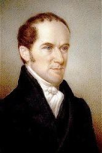
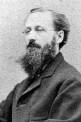

Henry Ware was born in
Hingham, Massachusetts, in 1793. His father was a Unitarian minister;
afterwards a Professor in Harvard College. Young Ware graduated at Harvard,
studied theology, and became minister of the Second Unitarian Society, in
Boston, in 1817. After a ministry of twelve years, he made a foreign tour,
and on his return was elected "Parkman Professor of Pulpit Eloquence and
Pastoral Theology" in Harvard College. In this position he obtained
eminence. He died in September, 1843. His collected works in four volumes,
were edited after his death, by the Rev. Chandler Robbins.
--Annotations of the Hymnal, Charles Hutchins, M.A., 1872
===================
Ware, Henry,

D.D., son of Dr. H. Ware,
pastor of the Unitarian congregation at Hingham, Massachusetts, and
afterward Hollis Professor of Divinity at Cambridge, U.S.A., was born at
Hingham, April 21, 1794. Before going to Harvard College, in 1808, he was
under the care of Dr. Allyn, at Duxbury, and then of Judge Ware, at
Cambridge. He graduated at Harvard in high honours, in 1812; and was then
for two years an assistant teacher in Exeter Academy. He was licensed to
preach by the Boston Unitarian Association, July 31, 1815; and ordained
pastor of the Second Church of that city, Jan. 1, 1817. In 1829, in
consequence of his ill health, he received the assistance of a co-pastor in
the person of Ralph Waldo Emerson. In the same year Ware was appointed
Professor of Pulpit Eloquence and Pastoral Care in the Cambridge Theological
School. He entered upon his duties in 1830, and resigned in 1842. He removed
to Framingham, and died there, Sept. 25, 1843. His D.D. degree was conferred
upon Memoir, published by his brother John Ware, M.D.,
were numerous and on a variety of topics. He edited the Christian Disciple,
which was established in 1813, and altered in title to the Christian
Examiner in 1824, for some years before the change of
title, and gave it his assistance subsequently. The Rev. Chandler Robbins
collected his works and published them in four volumes, in 1847. His hymns,
many of which are of more than usual excellence, are given in vol. i. Of
these the following are in common use:
John Edgar Gould USA
1821-1875.

Born in Bangor, ME,
he became a musician. He managed music stores in New York City and
Philadelphia, PA., the latter with composer partner, William Fischer. He
married Josephine Louisa Barrows, and they had seven children: Blanche,
Marie, Ida, John, Josephine, Josephine, and Augusta. He compiled eight
religious songbooks from 1846 thru 1869. He died while traveling in Algiers,
Africa, and was buried in Philadelphia, PA.
John Perry